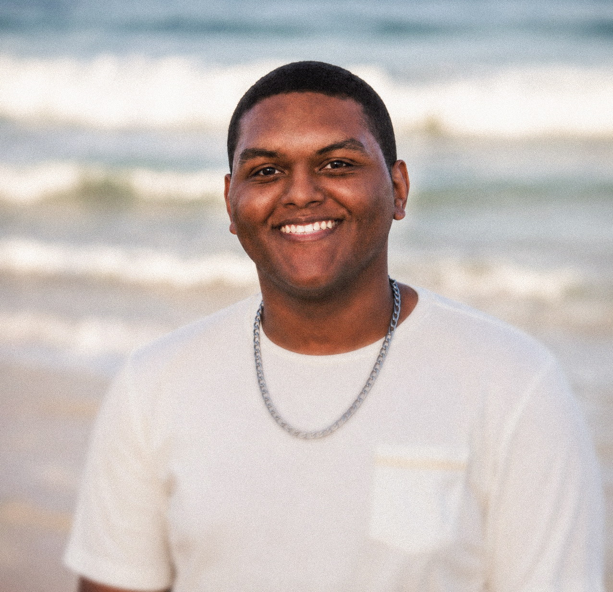
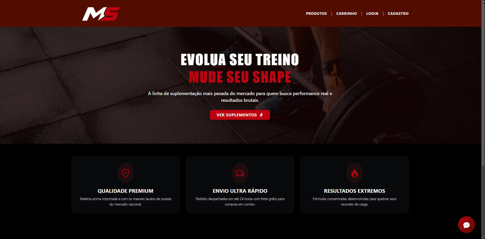
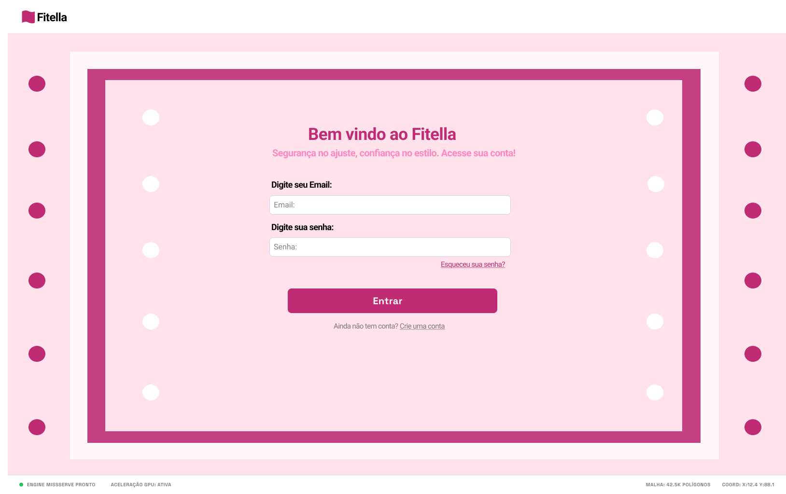
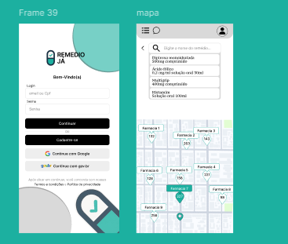

Sou estudante do 4º período de Análise e Desenvolvimento de Sistemas (ADS) na FICR,
apaixonado por tecnologia e focado em criar soluções digitais modernas e acessíveis.
Tenho conhecimentos em HTML, CSS, JavaScript, C++, Figma e VS Code. Durante a
faculdade, participei do desenvolvimento de um protótipo de aplicativo que foi
selecionado para apresentação no Porto Digital (DemoDay).
Busco sempre evoluir minhas habilidades em desenvolvimento front-end, trabalho em
equipe e organização para construir projetos práticos e eficientes.

A MonsterSups foi um projeto com o intuito de ser uma plataforma de e-commerce especializada na venda de suplementos alimentares, desenvolvida com Django e PostgreSQL. O sistema permite que clientes naveguem por diferentes categorias de produtos, adicione itens ao carrinho, realizem pedidos e recebam suporte através de um chatbot integrado. Além disso, a aplicação conta com um painel administrativo completo para gerenciamento de produtos, categorias, estoque, clientes e pedidos.
O Fitella era um projeto desenvolvido com o objetivo de realizar testes de interfaces utilizando Selenium, análise de fluxos de navegação e testes de UX. O sistema nasceu com o intuito de reduzir filas em lojas de roupas e, principalmente, prevenir o estresse causado pela necessidade de devolver um produto e enfrentar toda a burocracia nesse processo. O funcionamento é simples: o usuário copiava o link de uma loja específica, e a aplicação ficava responsável por identificar os tamanhos disponíveis, indicar onde a peça ficaria mais apertada e avaliar se ela possuía as medidas para o usuário.


A RemedioJá foi uma aplicação desenvolvida para facilitar a consulta de medicamentos disponíveis em postos de saúde pública, evitando filas desnecessárias e permitindo que os usuários verificassem a disponibilidade do medicamento antes de se deslocarem até o local. O projeto foi selecionado para ser apresentado no Demoday do Porto Digital e também recebeu uma oportunidade de investimento.